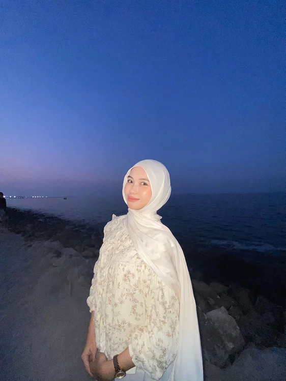
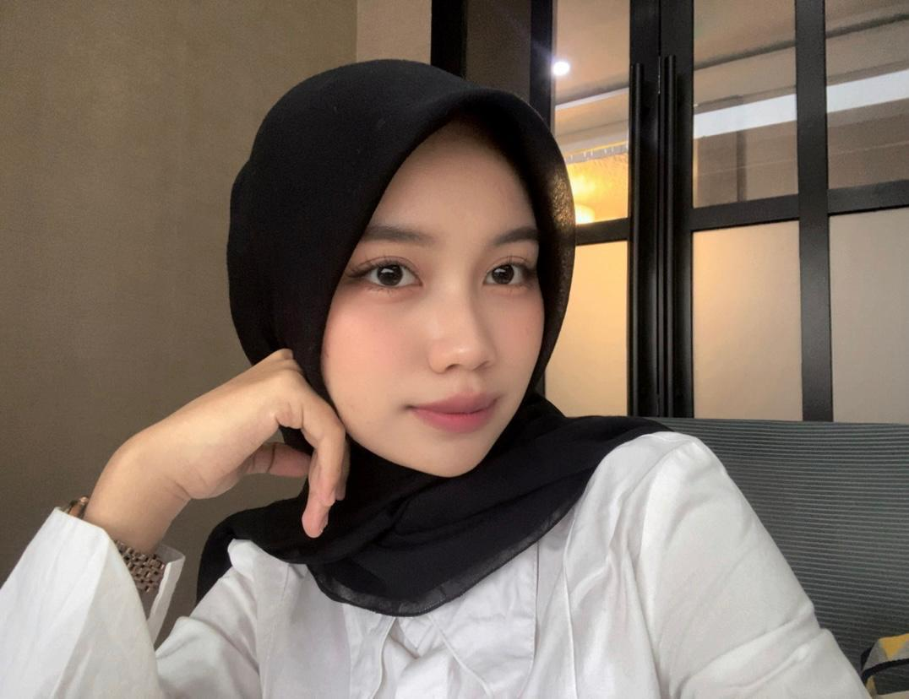
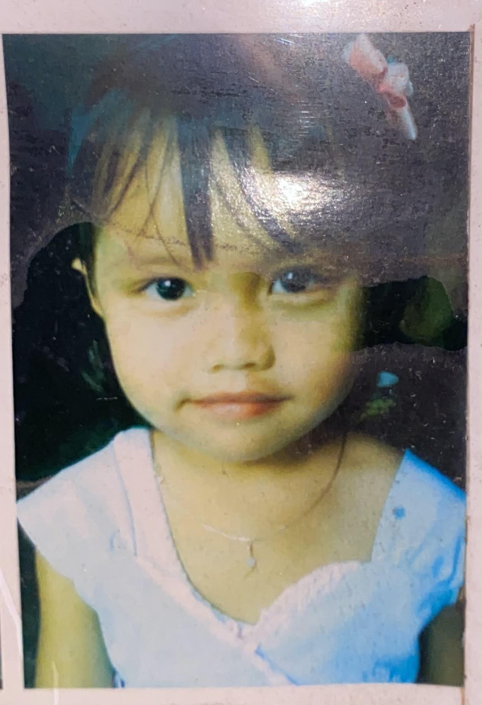
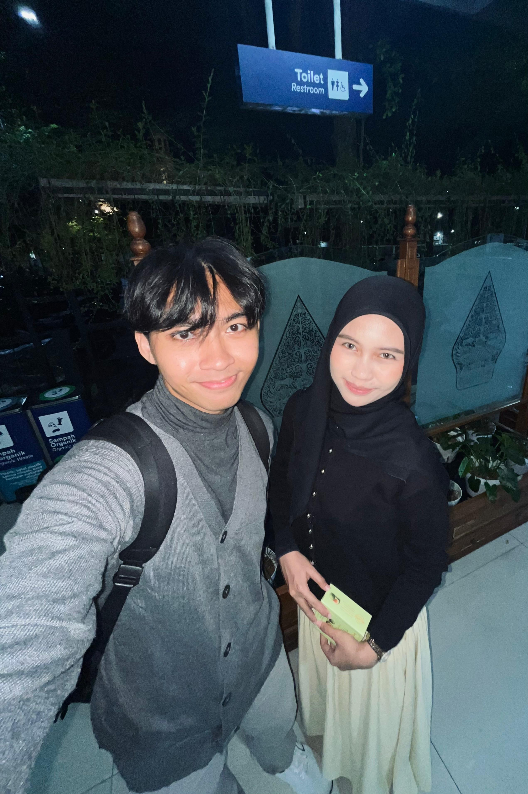

Klo kgn liat ini yahh..
Coba liatin jari dari 5 sampai 1 ke kamera🤗.
Kamera dipakai hanya di browsermu. Gambar tidak dikirim atau disimpan ke mana pun.

Mau ke PIK lagiii
eummmmm
Ciapaa cii iniiih??
when yahh, bisa lagi?